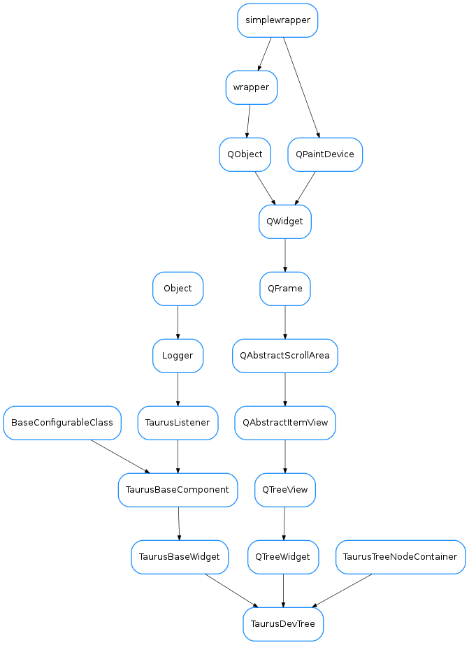

TaurusDevTree¶

-
class
TaurusDevTree(parent=None, designMode=False)[source]¶ Bases:
taurus.qt.qtgui.tree.taurusdevicetree.TaurusTreeNodeContainer,PyQt4.QtGui.QTreeWidget,taurus.qt.qtgui.base.taurusbase.TaurusBaseWidgetThis widget displays a list of servers, devices or instances. To set a new Model use either setModel(filters), addModels(list), setFilters(...) or loadTree(filters) setModel and loadTree are equivalent; adding a new branch to the tree addModels merges the tree with new models setFilters clears previous models and adds new one
-
Expander¶
-
Loader¶
-
TRACE_ALL= False¶
-
addAttrToDev(my_device, expert=False, allow_types=None)[source]¶ This command returns the list of attributes of a given device applying display level and type filters. @argin expert If False only PyTango.DispLevel.OPERATOR attributes are displayed @argin allow_types Only those types included in the list will be displayed (e.g. may be restricted to numeric types only)
-
addModels(modelNames)[source]¶ Adds models to the existing ones: :type modelNames: :class:~`sequence` <:class:~`str`> :param modelNames: the names of the models to be added .. seealso::
removeModels()
-
collapseNode(ALL=False, filters='', fun=None)[source]¶ Collapses the whole tree or from a given node. @argin ALL tells whether to collapse from current item or the whole tree @argin filters Allows to set a list of nodes to not be filtered
-
deviceSelected(device_name='')[source]¶ QSIGNAL: this method is used to emit deviceSelected(QString) signal
-
getMatchingNodes(regexp, limit=0, all=False, exclude=None)[source]¶ It returns all nodes matching the given expression.
-
getModelMimeData()[source]¶ Returns a MimeData object containing the model data. The default implementation fills the TAURUS_MODEL_MIME_TYPE. If the widget’s Model class is Attribute or Device, it also fills TAURUS_ATTR_MIME_TYPE or TAURUS_DEV_MIME_TYPE, respectively
-
initConfig()[source]¶ Initializing the attributes that will be kept persitent as Qt settings. e.g. for Filters property, the following attributes are created:
- self.filters
- self._filters
- self.setFilters
- self.getFilters
- self.resetFilters
-
mouseMoveEvent(event)[source]¶ copied from TaurusBaseWidget to provide drag events It had to be rewritten as QTreeWidget does not allow drag events
-
setIcons(dct={}, root_name=None, regexps=True)[source]¶ This method change the icons depending of the status of the devices Dict is a dictionary with name of device and colors such as {name_device:color,name_device2:color2} An alternative may be an icon name!
-
setNodeTree(parent, diction, alias=False)[source]¶ It has parent as argument to allow itself to be recursive Initializes the node tree from a dictionary {‘Node0.0’:{‘Node1.0’:None,’Node1.1’:None}}
-
setTree(diction, clear=False)[source]¶ Initializes the tree from a dictionary {‘Node0.0’:{‘Node1.0’:None,’Node1.1’:None}}
-